12/2023
POC A POC. DIE-CUT BOOK COLLECTION
EDITORIAL
05/2023
DUALITAT. DISSOCIATIVE DIMENSIONS. PHOTOGRAPHY PROJECT
PHOTOGRAPHY
03/2024
BEYOND THE EYE. LUKE AND NIK PHOTOGRAPHY EXHIBITION
EDITORIAL
02/2024
FIKA. SPECIALTY COFFE ON A CAN
3D DESIGN
03/2024
LOEWE. THE 70S ARE BACK. CAT EYE SUNGLASSES CAMPAIGN
3D DESIGN
01/2024
NOVA. STREAMING WEB DESIGN AND DEVELOPTMENT
WEB DESIGN
01/2025
JACQUEMUS. SIAMO A NAPOLI
3D ANIMATION
05/2024
TRIZA. ALTERNATIVE INDIE MUSIC MAGAZINE
EDITORIAL
05/2024
NIKE MOCHA. FEET ON THE GROUND, HEAD IN THE SKY.
3D DESIGN
11/2023
RATA INDIE. ALTERNATIVE MUSIC FEST WEBSITE
WEB DESIGN
2023
POC A POC
EDITORIAL
2023
DUALITAT
PHOTOGRAPHY
2024
BEYOND THE EYE
EDITORIAL
2024
FIKA
3D DESIGN
2024
LOEWE
3D DESIGN
2024
NOVA
WEB DESIGN
2025
JACQUEMUS
3D ANIMATION
2024
TRIZA
EDITORIAL
2024
MOCHA
3D DESIGN
2023
RATA INDIE
WEB DESIGN
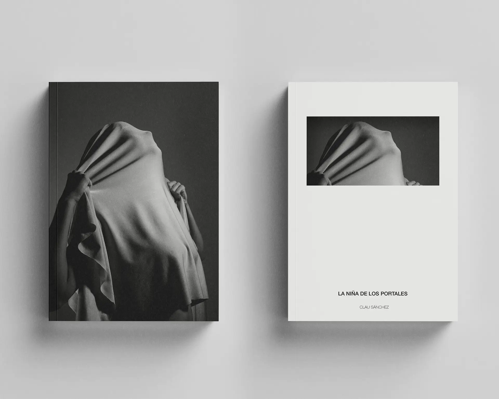
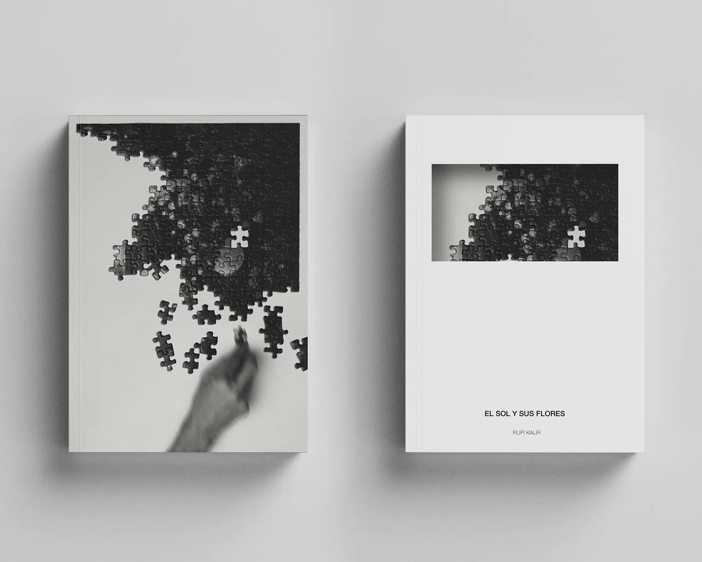
EDITORIAL [COLL]
COLLECTION [RD]
POETRY
PROJECT01
POC A POC: COLLECTION OF DIE-CUT BOOKS
AND COMPLETE INTERNAL LAYOUT OF ONE OF THEM.
AN EDITORIAL PROJECT THAT SEEKS TO DIFFERENTIATE ITSELF FROM THE CURRENT IDEA OF WHAT A BOOK OF POETRY LOOKS LIKE, BRINGING AN APPROACH THAT IS MORE APPROPRIATE TO THE SENSIBILITY AND METAPHORICAL NATURE OF THE BOOK ITSELF.
THESE ARE BOOKS THAT OPENLY DISCUSS SENSITIVE TOPICS SUCH AS MENTAL HEALTH ISSUES, DEPENDENCY OR TRAUMATIC EXPERIENCES FROM AN AUTOBIOGRAPHICAL POINT OF VIEW AND USING WRITING AS A CATHARTIC PROCESS OF HEALING.
THE DESIGN OF THESE COVERS REPRESENTS THE MIND AS A PRISON WITH A SMALL WINDOW THROUGH WHICH WE ARE ONLY ABLE TO SEE THE PROBLEM, DUE TO ITS ENORMOUS MAGNITUDE. BUT WHEN WE UNCOVER THE DIE, WHEN WE OPEN THAT DOOR, WE DISCOVER THAT THE ANSWER WAS ALWAYS THERE INSIDE, THAT THE VERY MIND THAT IMPRISONED US WAS THE ONLY ONE THAT COULD LIBERATE US.
AND COMPLETE INTERNAL LAYOUT OF ONE OF THEM.
AN EDITORIAL PROJECT THAT SEEKS TO DIFFERENTIATE ITSELF FROM THE CURRENT IDEA OF WHAT A BOOK OF POETRY LOOKS LIKE, BRINGING AN APPROACH THAT IS MORE APPROPRIATE TO THE SENSIBILITY AND METAPHORICAL NATURE OF THE BOOK ITSELF.
THESE ARE BOOKS THAT OPENLY DISCUSS SENSITIVE TOPICS SUCH AS MENTAL HEALTH ISSUES, DEPENDENCY OR TRAUMATIC EXPERIENCES FROM AN AUTOBIOGRAPHICAL POINT OF VIEW AND USING WRITING AS A CATHARTIC PROCESS OF HEALING.
THE DESIGN OF THESE COVERS REPRESENTS THE MIND AS A PRISON WITH A SMALL WINDOW THROUGH WHICH WE ARE ONLY ABLE TO SEE THE PROBLEM, DUE TO ITS ENORMOUS MAGNITUDE. BUT WHEN WE UNCOVER THE DIE, WHEN WE OPEN THAT DOOR, WE DISCOVER THAT THE ANSWER WAS ALWAYS THERE INSIDE, THAT THE VERY MIND THAT IMPRISONED US WAS THE ONLY ONE THAT COULD LIBERATE US.
DATE
AREAS
LAYOUT
TOOL
POST-PRODUCTION
12.2023
EDITORIAL
INDESIGN
FUJIFILM X-S10
LIGHTROOM, PHOTOSHOP
POC A POC. NEXT PROJECT DUALITAT.
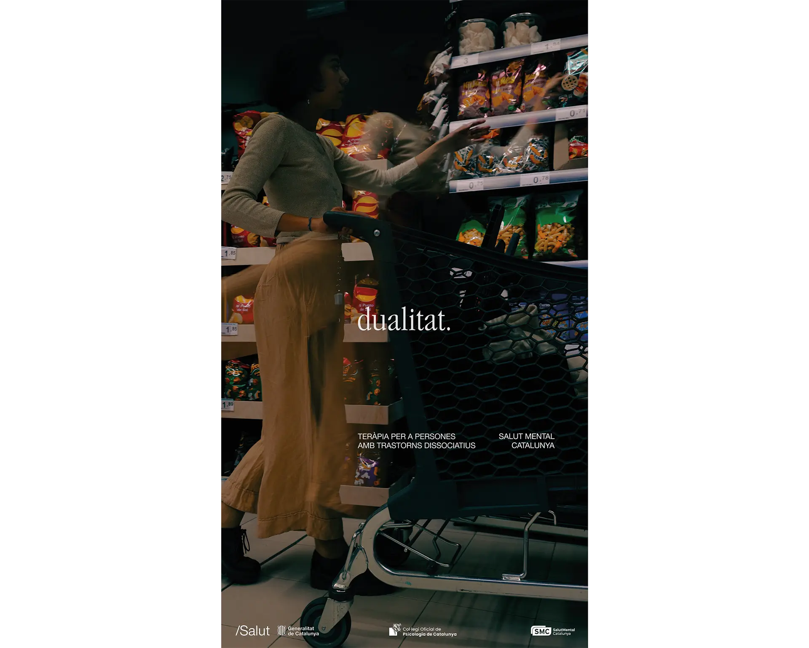
PHOTOGRAPHY [COLL]
CONCEPTUAL [ND]
PERSONAL
PROJECT02
THE STRUGGLE BETWEEN THE INTERNAL AND THE EXTERNAL EXPERIENCED BY PEOPLE WITH DISSOCIATIVE DISORDERS.
THE FEELING OF BEING A SPECTATOR OF ONE'S OWN BODY, THE SENSATION OF DIFFERENT SELVES COEXISTING IN THE SAME ORGANISM, AS A RESULT OF DEPERSONALIZATION.
AN ATTEMPT TO SOMEHOW BRING OUT SOMETHING THAT IS CARRIED SO DEEP INSIDE.
THE FEELING OF BEING A SPECTATOR OF ONE'S OWN BODY, THE SENSATION OF DIFFERENT SELVES COEXISTING IN THE SAME ORGANISM, AS A RESULT OF DEPERSONALIZATION.
AN ATTEMPT TO SOMEHOW BRING OUT SOMETHING THAT IS CARRIED SO DEEP INSIDE.
DATE
AREAS
TOOL
POST-PRODUCTION
05.2023
PHOTOGRAPHY
FUJIFILM X-S10
LIGHTROOM, PHOTOSHOP
DUALITAT. NEXT PROJECT BEYOND THE EYE. BEYOND.
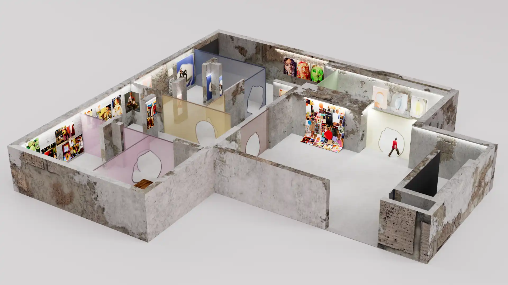
EXHIBITION [COLL]
BRANDING [RD]
CONCEPTUAL
PROJECT03
LUKE&NIK: BEYOND THE EYE
A REFRESHING VIEW IN CONTEMPORARY COMMERCIAL PHOTOGRAPHY.
THIS PROJECT INCLUDES THE DESIGN OF A 3D MODEL OF THE EXHIBITION VENUE AND THE FULL EDITORIAL PROJECT OF THE CATALOG, WHICH FEATURES ALL THE SHOWCASE'S PRINTS, WITH NOTES AND COMMENTS ON THE CREATIVE PROCESS.
THE WHOLE IDENTITY FOLLOWS A STYLE MARKED BY IRREGULARITY, WHERE THE HANDMADE AND MANUAL TAKE OVER THE PATTERNS AND RULES. SHAPES TRY NOT TO BE TOO RIGID OR GEOMETRIC. THE PRINTED ELEMENTS USE A PARTIALLY UNCONSTRAINED GRID TO MANTAIN THE RANDOM, ASYMETRIC AND UNEVEN AESTHETIC.
BUT IT MAKES MUCH MORE SENSE IF YOU SEE THE WHOLE THING:
>READ THE FULL PROJECT HERE >SEE CATALOG HERE
A REFRESHING VIEW IN CONTEMPORARY COMMERCIAL PHOTOGRAPHY.
THIS PROJECT INCLUDES THE DESIGN OF A 3D MODEL OF THE EXHIBITION VENUE AND THE FULL EDITORIAL PROJECT OF THE CATALOG, WHICH FEATURES ALL THE SHOWCASE'S PRINTS, WITH NOTES AND COMMENTS ON THE CREATIVE PROCESS.
THE WHOLE IDENTITY FOLLOWS A STYLE MARKED BY IRREGULARITY, WHERE THE HANDMADE AND MANUAL TAKE OVER THE PATTERNS AND RULES. SHAPES TRY NOT TO BE TOO RIGID OR GEOMETRIC. THE PRINTED ELEMENTS USE A PARTIALLY UNCONSTRAINED GRID TO MANTAIN THE RANDOM, ASYMETRIC AND UNEVEN AESTHETIC.
BUT IT MAKES MUCH MORE SENSE IF YOU SEE THE WHOLE THING:
>READ THE FULL PROJECT HERE >SEE CATALOG HERE
DATE
AREAS
LAYOUT
MODELING
RENDERS
03.2024
EDITORIAL, BRANDING, 3D DESIGN
INDESIGN
CINEMA 4D
REDSHIFT
BEYOND THE EYE. NEXT PROJECT FIKA.
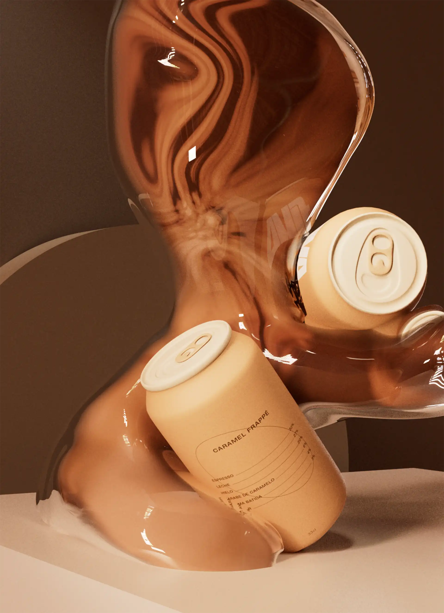
3D DESIGN [COLL]
PUBLICITY [RD]
PRODUCT
PROJECT04
FIKA: COFFEE IN A CAN.
THE MOMENT TO STOP AND APPRECIATE
THE GOOD THINGS IN LIFE.
'FIKA' IS A SWEDISH TERM THAT REFERS TO COFFEE AS AN IDEA OF A SOCIAL ACT: THAT IS, NOT FOR DRINKING IT, BUT FOR THE ACT OF SITTING DOWN WITH ANOTHER PERSON TO TALK AND ENJOY THE MOMENT, COFFEE AS SUCH BEING AN EXCUSE TO DO SO.
THE PROJECT SEEKS TO BE ABLE TO TRANSPORT THIS MOMENT ANYWHERE THROUGH THE CAN FORMAT, AND OFFERS A RANGE OF DIFFERENT TYPES AND FLAVORS OF COFFEE.
THE COLOR PALETTE IS INSPIRED BY THE TONES GENERATED BY MIXING COFFEE WITH MILK OR ICE, AND SEEKS TO CREATE A WARM, PLEASANT AND SOFT AESTHETIC THAT MATCHES THE CONCEPT.
THE MOMENT TO STOP AND APPRECIATE
THE GOOD THINGS IN LIFE.
'FIKA' IS A SWEDISH TERM THAT REFERS TO COFFEE AS AN IDEA OF A SOCIAL ACT: THAT IS, NOT FOR DRINKING IT, BUT FOR THE ACT OF SITTING DOWN WITH ANOTHER PERSON TO TALK AND ENJOY THE MOMENT, COFFEE AS SUCH BEING AN EXCUSE TO DO SO.
THE PROJECT SEEKS TO BE ABLE TO TRANSPORT THIS MOMENT ANYWHERE THROUGH THE CAN FORMAT, AND OFFERS A RANGE OF DIFFERENT TYPES AND FLAVORS OF COFFEE.
THE COLOR PALETTE IS INSPIRED BY THE TONES GENERATED BY MIXING COFFEE WITH MILK OR ICE, AND SEEKS TO CREATE A WARM, PLEASANT AND SOFT AESTHETIC THAT MATCHES THE CONCEPT.
DATE
AREAS
MODELING
RENDERS
LABEL DESIGN
02.2024
3D DESIGN, BRANDING
CINEMA 4D
REDSHIFT
PHOTOSHOP, ILLUSTRATOR
FIKA. NEXT PROJECT LOEWE.
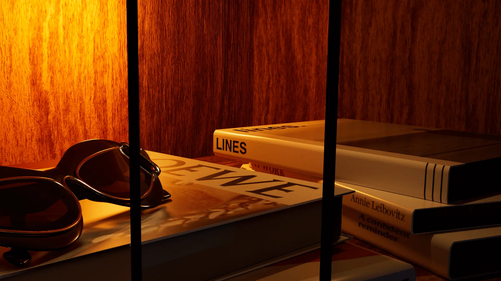
3D DESIGN [COLL]
PUBLICITY [RD]
PRODUCT
PROJECT05
CAT EYE SUNGLASSES
CONCEPT: THE COMEBACK OF THE 70s.
THE AIM OF THIS CAMPAIGN IS TO SHOW
THE POINT WHERE RETRO AND MODERN CONVERGE.
THE PRODUCT WORKS HAND IN HAND WITH THE 'MID CENTURY MODERN' INTERIOR DESIGN TREND, WHICH IS BASED ON THE FUNCTIONALITY OF THE ELEMENTS OF THE MID-TWENTIETH CENTURY BUT SEEKING A MORE FUTURISTIC AESTHETIC. THE CONTROLLED COLORFULNESS OF THE 70'S IS NOTICEABLE IN THE WARM LIGHTING COMING FROM SMALL LIGHT SOURCES.
THE WOODEN FURNITURE COMBINED WITH DECORATIVE ELEMENTS OF THOSE YEARS, SEEK TO ACHIEVE THIS RETRO NOSTALGIC AESTHETIC THAT IS SO MUCH STARRING THE CURRENT TRENDS, THUS PERFECTLY INCORPORATING THIS PIECE OF LOEWE.
CONCEPT: THE COMEBACK OF THE 70s.
THE AIM OF THIS CAMPAIGN IS TO SHOW
THE POINT WHERE RETRO AND MODERN CONVERGE.
THE PRODUCT WORKS HAND IN HAND WITH THE 'MID CENTURY MODERN' INTERIOR DESIGN TREND, WHICH IS BASED ON THE FUNCTIONALITY OF THE ELEMENTS OF THE MID-TWENTIETH CENTURY BUT SEEKING A MORE FUTURISTIC AESTHETIC. THE CONTROLLED COLORFULNESS OF THE 70'S IS NOTICEABLE IN THE WARM LIGHTING COMING FROM SMALL LIGHT SOURCES.
THE WOODEN FURNITURE COMBINED WITH DECORATIVE ELEMENTS OF THOSE YEARS, SEEK TO ACHIEVE THIS RETRO NOSTALGIC AESTHETIC THAT IS SO MUCH STARRING THE CURRENT TRENDS, THUS PERFECTLY INCORPORATING THIS PIECE OF LOEWE.
DATE
AREAS
MODELING
RENDERS
04.2024
3D DESIGN, BRANDING
CINEMA 4D
REDSHIFT
LOEWE. NEXT PROJECT NOVA.
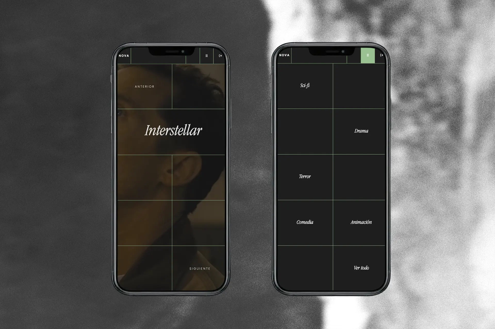
WEB DESIGN [COLL]
FRONT-END [RD]
STREAMING
PROJECT06
NOVA STREAMING.
NOT THE STREAMING WEB YOU'RE USED TO SEEING
A WEB DESIGN THAT SEEKS TO CREATE A NEW USER EXPERIENCE, OUTSIDE OF THE ESTABLISHED NORMS OF WHAT A STREAMING WEBSITE IS SUPPOSED TO LOOK LIKE.
NOVA AIMS TO DIFFERENTIATE ITSELF FROM THE REST BY STEPPING OUT OF THE CONVENTIONAL AND BETTING ON A DIFFERENT AND MORE INNOVATIVE OPTION. THE IDEA IS TO TAKE THE USER OUT OF ROUTINE BEHAVIORS TO BRING HIM CLOSER TO THE DESIGN ASPECT.
THIS PROJECT INCLUDES BOTH THE DESIGN OF THE WEB AND ITS UX, AS WELL AS THE SUBSEQUENT FRONT-END (AND SOME BACK-END) DEVELOPMENT.
NOT THE STREAMING WEB YOU'RE USED TO SEEING
A WEB DESIGN THAT SEEKS TO CREATE A NEW USER EXPERIENCE, OUTSIDE OF THE ESTABLISHED NORMS OF WHAT A STREAMING WEBSITE IS SUPPOSED TO LOOK LIKE.
NOVA AIMS TO DIFFERENTIATE ITSELF FROM THE REST BY STEPPING OUT OF THE CONVENTIONAL AND BETTING ON A DIFFERENT AND MORE INNOVATIVE OPTION. THE IDEA IS TO TAKE THE USER OUT OF ROUTINE BEHAVIORS TO BRING HIM CLOSER TO THE DESIGN ASPECT.
THIS PROJECT INCLUDES BOTH THE DESIGN OF THE WEB AND ITS UX, AS WELL AS THE SUBSEQUENT FRONT-END (AND SOME BACK-END) DEVELOPMENT.
DATE
AREAS
FRONT-END
BACK-END
IN COLLAB W
01.2024
WEB DESIGN, UX/UI, WEB DEVELOPTMENT
HTML5, CSS3, JS
PHP
NUMERO28
NOVA. NEXT PROJECT TRIZA.

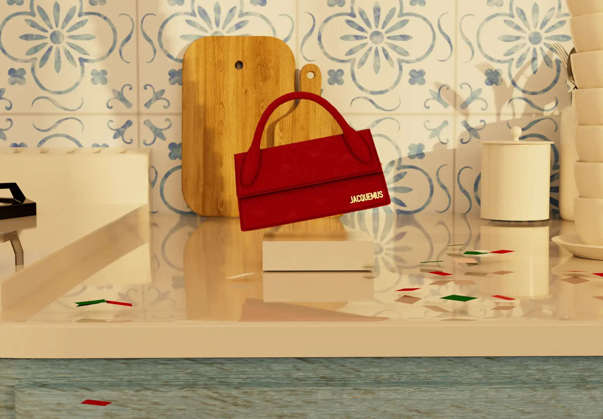
3D DESIGN [COLL]
ANIMATION [TH]
PROMOTIONAL
PROJECT07
JACQUEMUS.
SIAMO A NAPOLI
A PROMOTIONAL VIDEO FOR THE OPENING OF A NEW JACQUEMUS STORE IN NAPLES, ITALY.
SET IN A MEDITERRANEAN KITCHEN, THIS PROJECT USES THE USUAL TONE AND STYLE OF THE BRAND TO GENERATE THE PROPOSAL, WITH AN ADDED VALUE.
MADE ENTIRELY WITH 3D IN CINEMA 4D AND RENDERED WITH REDSHIFT.
SIAMO A NAPOLI
A PROMOTIONAL VIDEO FOR THE OPENING OF A NEW JACQUEMUS STORE IN NAPLES, ITALY.
SET IN A MEDITERRANEAN KITCHEN, THIS PROJECT USES THE USUAL TONE AND STYLE OF THE BRAND TO GENERATE THE PROPOSAL, WITH AN ADDED VALUE.
MADE ENTIRELY WITH 3D IN CINEMA 4D AND RENDERED WITH REDSHIFT.
DATE
AREAS
MODELING
RENDERS
POSTPRODUCTION
01.2025
3D DESIGN
CINEMA 4D
REDSHIFT
ADOBE PREMIERE
NOVA. NEXT PROJECT TRIZA.
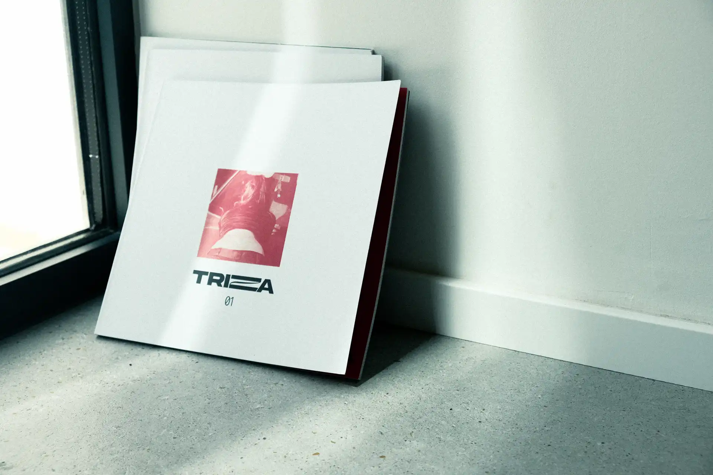
EDITORIAL [COLL]
MAGAZINE [RD]
MUSIC
PROJECT08
TRIZA MUSIC MAGAZINE.
THE EMERGING MUSIC SCENE FROM A DECONSTRUCTED, URBAN AND UNDISCOVERED PERSPECTIVE.
A PROJECT THAT SEEKS TO ENCOURAGE MUSICAL EXPLORATION BUT FROM A CASUAL AND NATURAL APPROACH, AIMING TO CONNECT SMALL ARTISTS WITH EACH OTHER AND WITH THE PEOPLE, WITHOUT PAYING TOO MUCH ATTENTION TO THE NUMBERS AND STATISTICS.
WITH A TONE CLOSE TO WHAT IS THE CURRENT YOUTH MINDSET ABOUT ART, TRIZA FOCUSES MAINLY ON INFORMALITY AND FRESHNESS, SEPARATING ITSELF FROM OTHER MORE CONVENTIONAL OR CENSORED MEDIA. THIS IS EXPLAINED BY THE TAGLINE: 'PORQUE SÍ' OR 'JUST BECAUSE', WHICH MEANS TO DO THINGS BECAUSE YOU BELIEVE IN THEM, BECAUSE THEY WORK. FOR YOU AND NOT FOR OTHERS.
AND THEREFORE, THE PROJECT IS BUILT ON IRREGULAR GRIDS, TEXTS THAT ARE CUT OR OVERLAID WITH IMAGES AND PRETTY MUCH UNCONVENTIONAL ELEMENTS IN THE PUBLISHING WORLD.
THE EMERGING MUSIC SCENE FROM A DECONSTRUCTED, URBAN AND UNDISCOVERED PERSPECTIVE.
A PROJECT THAT SEEKS TO ENCOURAGE MUSICAL EXPLORATION BUT FROM A CASUAL AND NATURAL APPROACH, AIMING TO CONNECT SMALL ARTISTS WITH EACH OTHER AND WITH THE PEOPLE, WITHOUT PAYING TOO MUCH ATTENTION TO THE NUMBERS AND STATISTICS.
WITH A TONE CLOSE TO WHAT IS THE CURRENT YOUTH MINDSET ABOUT ART, TRIZA FOCUSES MAINLY ON INFORMALITY AND FRESHNESS, SEPARATING ITSELF FROM OTHER MORE CONVENTIONAL OR CENSORED MEDIA. THIS IS EXPLAINED BY THE TAGLINE: 'PORQUE SÍ' OR 'JUST BECAUSE', WHICH MEANS TO DO THINGS BECAUSE YOU BELIEVE IN THEM, BECAUSE THEY WORK. FOR YOU AND NOT FOR OTHERS.
AND THEREFORE, THE PROJECT IS BUILT ON IRREGULAR GRIDS, TEXTS THAT ARE CUT OR OVERLAID WITH IMAGES AND PRETTY MUCH UNCONVENTIONAL ELEMENTS IN THE PUBLISHING WORLD.
DATE
AREAS
LAYOUT
IN COLLAB W
05.2024
EDITORIAL
INDESIGN
DIEGO ARQUEZ
TRIZA. NEXT PROJECT MOCHA.
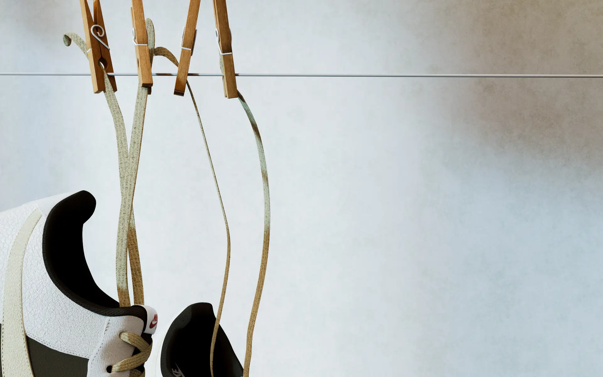
3D DESIGN [COLL]
PUBLICITY [RD]
PRODUCT
PROJECT10
AIR FORCE 1 X DOSGES
CONCEPT: FEET ON THE GROUND, HEAD IN THE SKY.
THE TASTE FOR COMFORT AND NATURALNESS
WITHOUT LOSING THE TOUCH OF VITALITY AND ENERGY.
THE NATURAL LIGHTING SIMULATING THE SUN COMING THROUGH THE WINDOW AND THE CHOICE OF EARTHY COLORS CREATE AN ATMOSPHERE OF AUTHENTICITY, WELL-BEING AND TIMELESSNESS, WHILE THE RED EMBROIDERED DETAILS BRING A CONTEMPORARY TOUCH TO THE DESIGN.
THE CHOICE TO SHOW THEM SUSPENDED IN THE AIR IS TO REFLECT THIS SENSE OF LIGHTNESS AND MENTAL ELEVATION, WHILE MAINTAINING THE IMPORTANCE OF AIR THAT THE BRAND GIVES TO THIS LINE.
CONCEPT: FEET ON THE GROUND, HEAD IN THE SKY.
THE TASTE FOR COMFORT AND NATURALNESS
WITHOUT LOSING THE TOUCH OF VITALITY AND ENERGY.
THE NATURAL LIGHTING SIMULATING THE SUN COMING THROUGH THE WINDOW AND THE CHOICE OF EARTHY COLORS CREATE AN ATMOSPHERE OF AUTHENTICITY, WELL-BEING AND TIMELESSNESS, WHILE THE RED EMBROIDERED DETAILS BRING A CONTEMPORARY TOUCH TO THE DESIGN.
THE CHOICE TO SHOW THEM SUSPENDED IN THE AIR IS TO REFLECT THIS SENSE OF LIGHTNESS AND MENTAL ELEVATION, WHILE MAINTAINING THE IMPORTANCE OF AIR THAT THE BRAND GIVES TO THIS LINE.
DATE
AREAS
MODELING
RENDERS
05.2024
3D DESIGN, BRANDING
CINEMA 4D
REDSHIFT
MOCHA. NEXT PROJECT RIF.
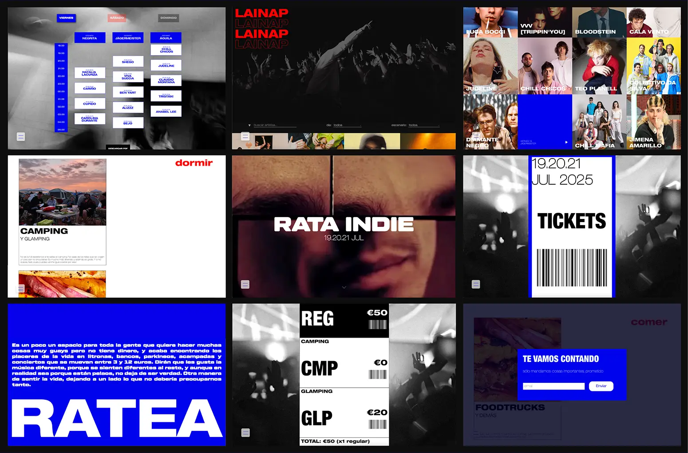
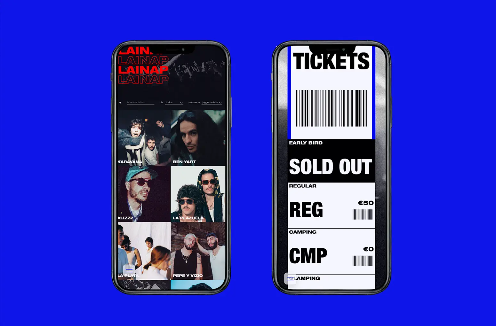
WEB DESIGN [COLL]
FRONT-END [RD]
MUSIC
PROJECT11
RATA INDIE FEST.
RATA INDIE IS A PROPOSAL FOR A SPANISH AND LATIN AMERICAN ALTERNATIVE MUSIC FESTIVAL.
THE TERM 'RATA INDIE' IS A TERM USED IN THESE CIRCLES TO DEFINE PEOPLE WHO HAVE MANY INTERESTS AND WANT TO DO MANY THINGS BUT HAVE NO MONEY, AND ALWAYS END UP IN CONCERTS THAT MOVE BETWEEN 3 AND 12 EUROS. THEY LEARN TO FEEL LIFE IN A DIFFERENT WAY AND FIND HAPPINESS IN THE SIMPLEST THINGS.
THE LINE-UP INCLUDES INTERNATIONALLY RECOGNIZED ARTISTS, ALONG WITH SMALL EMERGING ARTISTS, THUS PROMOTING THEM IN A SPACE THAT IS AT THE SAME TIME ECONOMICALLY ACCESSIBLE TO ALL AND THAT ENCOURAGES INCLUSIVE LEISURE.
RATA INDIE IS A PROPOSAL FOR A SPANISH AND LATIN AMERICAN ALTERNATIVE MUSIC FESTIVAL.
THE TERM 'RATA INDIE' IS A TERM USED IN THESE CIRCLES TO DEFINE PEOPLE WHO HAVE MANY INTERESTS AND WANT TO DO MANY THINGS BUT HAVE NO MONEY, AND ALWAYS END UP IN CONCERTS THAT MOVE BETWEEN 3 AND 12 EUROS. THEY LEARN TO FEEL LIFE IN A DIFFERENT WAY AND FIND HAPPINESS IN THE SIMPLEST THINGS.
THE LINE-UP INCLUDES INTERNATIONALLY RECOGNIZED ARTISTS, ALONG WITH SMALL EMERGING ARTISTS, THUS PROMOTING THEM IN A SPACE THAT IS AT THE SAME TIME ECONOMICALLY ACCESSIBLE TO ALL AND THAT ENCOURAGES INCLUSIVE LEISURE.
DATE
AREAS
UX DESIGN
FRONT-END
11.2023
WEB DESIGN, UX/UI, WEB DEVELOPTMENT
FIGMA
HTML5, CSS3, JS
RIF. NEXT PROJECT POC A POC.